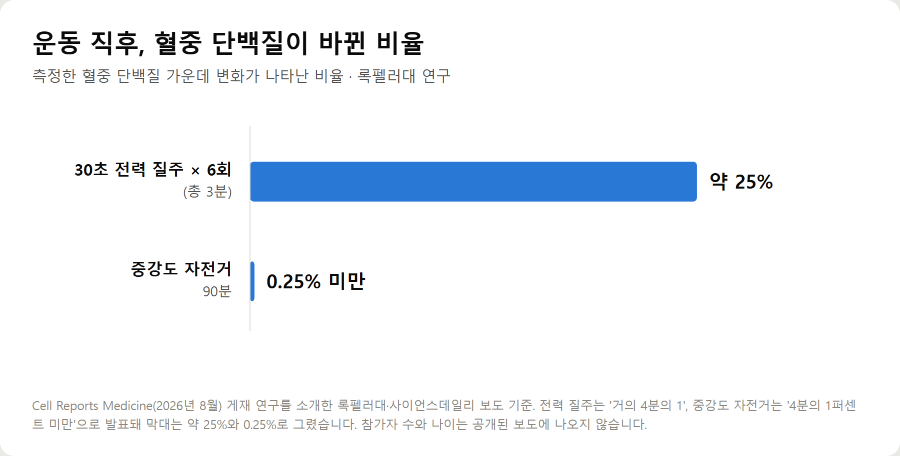
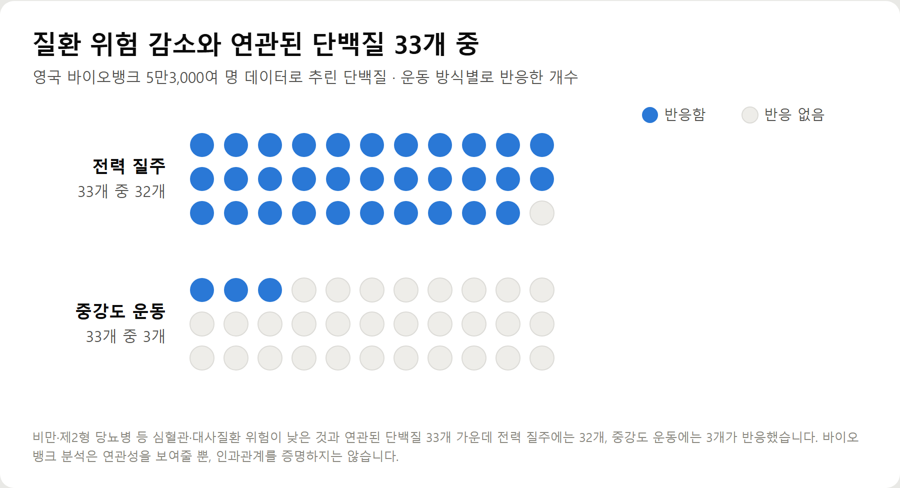
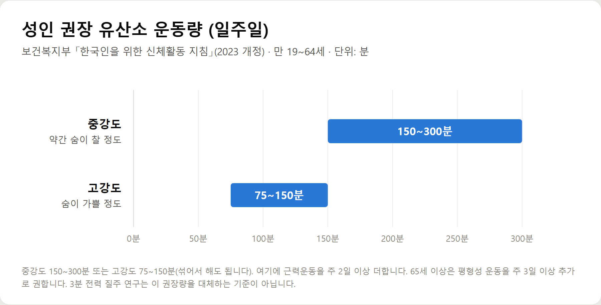
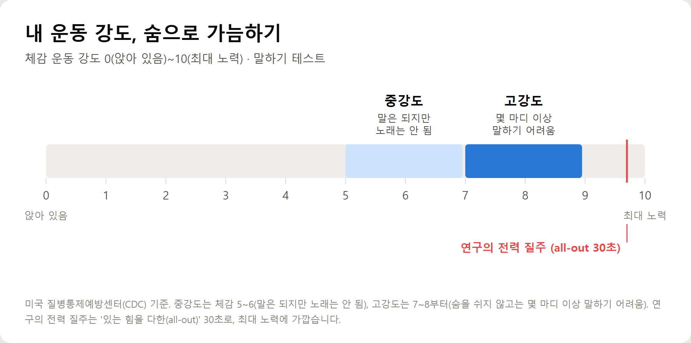

<meta charset="utf-8">
<title>전력 질주 3분 vs 중강도 90분 — 나의 투자 그리고 행복한 여행</title>
<meta name="description" content="30초 전력 질주 6회(총 3분)가 90분 중강도 운동보다 혈중 단백질을 크게 바꿨다는 록펠러대 연구(Cell Reports Medicine 2026)의 내용과 한계, 보건복지부 권장 운동량, 운동 강도 구분법, 40·50대 고강도 운동 안전 기준을 정리했습니다.">
<meta name="viewport" content="width=device-width, initial-scale=1">
<link rel="canonical" href="https://danielmoon82.github.io/moon/posts/sprint-hiit-2026-09-13.html">
<link rel="preconnect" href="https://fonts.googleapis.com">
<link rel="preconnect" href="https://fonts.gstatic.com" crossorigin>
<link rel="stylesheet" href="https://fonts.googleapis.com/css2?family=Hahmlet:wght@400;600;800&family=IBM+Plex+Mono:wght@400;500&family=IBM+Plex+Sans+KR:wght@300;400;500;600&display=swap">

<style>
  :root{
    --paper:#F2EEE6;--surface:#FAF8F3;--surface-2:#E7E1D5;
    --ink:#191510;--ink-2:#4A4235;--ink-3:#7D7364;
    --line:#D6CEBF;--line-soft:#E4DDD0;--accent:#B06A15;--accent-bright:#C2761A;
    --up:#E5484D;--down:#3B82F6;
    --f-display:"Hahmlet",'Nanum Myeongjo',"Apple SD Gothic Neo",serif;
    --f-body:"IBM Plex Sans KR","Apple SD Gothic Neo","Malgun Gothic",sans-serif;
    --f-mono:"IBM Plex Mono","SFMono-Regular",Consolas,monospace;
    --pad:clamp(20px,5vw,64px);
  }
  @media (prefers-color-scheme:dark){
    :root:not([data-theme="light"]){
      --paper:#0B1120;--surface:#121A2C;--surface-2:#1A2439;
      --ink:#E9EEF7;--ink-2:#A9B5C9;--ink-3:#72809A;
      --line:#26314A;--line-soft:#1D2739;--accent:#E8A33D;--accent-bright:#F0B45C;
    }
  }
  *{box-sizing:border-box;}
  body{margin:0;background:var(--paper);color:var(--ink);font-family:var(--f-body);
    font-weight:300;font-size:1rem;line-height:1.75;-webkit-font-smoothing:antialiased;}
  a{color:inherit;}
  img{max-width:100%;height:auto;}
  .wrap{max-width:760px;margin:0 auto;padding-inline:var(--pad);}
  .nav{position:sticky;top:0;z-index:20;background:color-mix(in srgb,var(--paper) 88%,transparent);
    backdrop-filter:saturate(180%) blur(12px);border-bottom:1px solid var(--line);}
  .nav-in{display:flex;align-items:center;justify-content:space-between;height:58px;}
  .brand{font-family:var(--f-display);font-weight:600;font-size:1rem;letter-spacing:-.02em;text-decoration:none;}
  .back{font-family:var(--f-mono);font-size:.72rem;color:var(--ink-3);text-decoration:none;}
  .article{padding-block:clamp(40px,7vw,72px) clamp(56px,9vw,96px);}
  .eyebrow{font-family:var(--f-mono);font-size:.68rem;letter-spacing:.16em;text-transform:uppercase;
    color:var(--accent);margin:0 0 14px;}
  h1{font-family:var(--f-display);font-weight:800;font-size:clamp(1.6rem,4.4vw,2.3rem);
    line-height:1.3;letter-spacing:-.03em;margin:0 0 16px;}
  .byline{font-family:var(--f-mono);font-size:.72rem;color:var(--ink-3);
    padding-bottom:24px;border-bottom:1px solid var(--line);margin-bottom:32px;}
  h2{font-family:var(--f-display);font-weight:600;font-size:1.25rem;letter-spacing:-.02em;margin:42px 0 14px;}
  h3{font-family:var(--f-display);font-weight:600;font-size:1.05rem;letter-spacing:-.02em;
    margin:30px 0 10px;padding-top:14px;border-top:1px solid var(--line-soft);}
  h3 .code{font-family:var(--f-mono);font-size:.7rem;font-weight:400;color:var(--ink-3);margin-left:6px;}
  p{margin:0 0 18px;color:var(--ink-2);}
  ul.checks{margin:0 0 18px;padding-left:20px;color:var(--ink-2);}
  ul.checks li{margin-bottom:8px;font-size:.94rem;}
  table{width:100%;border-collapse:collapse;font-size:.88rem;margin-bottom:8px;}
  th{font-family:var(--f-mono);font-size:.66rem;letter-spacing:.06em;text-transform:uppercase;
    color:var(--ink-3);text-align:right;padding:8px 6px;border-bottom:1px solid var(--line);}
  th:first-child{text-align:left;}
  td{padding:10px 6px;border-bottom:1px solid var(--line-soft);color:var(--ink-2);}
  td.num{font-family:var(--f-mono);text-align:right;font-variant-numeric:tabular-nums;}
  td.up{color:var(--up);} td.down{color:var(--down);}
  .scroll{overflow-x:auto;}
  figure{margin:22px 0;}
  figure img{display:block;border-radius:3px;background:var(--surface-2);}
  figcaption{margin-top:8px;font-family:var(--f-mono);font-size:.68rem;color:var(--ink-3);text-align:center;}
  .note{margin-top:34px;padding:16px 18px;border-left:3px solid var(--accent);
    background:var(--surface);border-radius:0 3px 3px 0;}
  .note p{margin:0;font-size:.85rem;color:var(--ink-3);}
  .foot{border-top:1px solid var(--line);background:var(--surface);padding-block:30px 38px;}
  .foot p{margin:0;font-size:.8rem;color:var(--ink-3);}
</style>

<nav class="nav">
  <div class="wrap nav-in">
    <a class="brand" href="../index.html">나의 투자 그리고 행복한 여행</a>
    <a class="back" href="../index.html#stocks">← 시황으로</a>
  </div>
</nav>

<main class="wrap article">
  <p class="eyebrow">Market</p>
  <h1>전력 질주 3분 vs 중강도 90분 — 록펠러대 '엑서카인' 연구 정리 (Cell Reports Medicine, 2026)</h1>
  <p class="byline">건강 · 2026-09-12 기준</p>

  <p>한 줄 요약: 30초 전력 질주 6회(총 3분)는 혈중 단백질의 약 4분의 1과 대사물질 200여 개를 바꿨고, 90분 중강도 자전거는 단백질의 0.25% 미만만 바꿨습니다. 다만 참가자 정보는 공개 보도에 없고, 건강 효과가 아니라 분자 반응을 비교한 연구입니다.</p>
  <p>2026년 8월 발표 뒤 9월 13일 국내에도 보도된 이 연구의 내용과 한계, 그리고 보건복지부 신체활동 지침과의 관계를 정리한 기록입니다.</p>
  <h2>핵심만 먼저</h2>
  <ul class="checks">
    <li>연구 내용 — 30초 전력 질주 6회(총 3분)가 90분 중강도 운동보다 혈액 속 단백질·대사물질을 훨씬 크게 바꿨습니다</li>
    <li>주의할 점 — 건강 효과를 직접 비교한 것이 아니라 운동 직후 분자 반응을 본 연구이고, 참가자의 나이·수는 공개 보도에 없습니다</li>
    <li>권장 운동량 — 성인은 일주일에 중강도 150~300분 또는 고강도 75~150분, 근력운동 주 2일 이상입니다</li>
    <li>40·50대 — 심장·대사·신장 질환이 있다면 고강도 운동 전에 의사와 먼저 상의하는 것이 국제 기준입니다</li>
  </ul>
  <h2>1. 3분 전력 질주 연구, 무엇을 비교했나</h2>
  <p>미국 록펠러대 폴 코헨(Paul Cohen), 루크 올슨(Luke Olsen) 연구원 팀은 운동 강도에 따라 몸속 반응이 어떻게 다른지 비교했습니다. 결과는 2026년 8월 국제학술지 셀 리포트 메디슨에 실렸습니다.</p>
  <p>비교한 운동은 세 가지입니다.</p>
  <ul class="checks">
    <li>전력 질주 — 있는 힘을 다한 30초 스프린트 6회, 합계 3분</li>
    <li>중강도 자전거 — 90분 동안 쉬지 않고 중간 강도로</li>
    <li>중강도 러닝머신 달리기</li>
  </ul>
  <p>그리고 운동 직후 혈액 속 단백질과 대사물질이 얼마나 바뀌는지를 측정했습니다.</p>
  <figure><figcaption>운동 직후 측정한 혈중 단백질 중 변화가 나타난 비율 (록펠러대 연구, Cell Reports Medicine 2026)</figcaption></figure>
  <p>전력 질주 직후에는 측정한 혈중 단백질의 거의 4분의 1이 달라졌습니다. 90분 중강도 자전거는 4분의 1퍼센트, 즉 0.25%에도 못 미쳤습니다. 러닝머신 달리기는 자전거보다는 많이 바꿨지만 전력 질주에는 한참 못 미쳤습니다.</p>
  <p>전력 질주는 대사물질도 200개 이상 바꿨습니다. 특히 혈관 성장, 조직 재구성, 호르몬 신호 전달에 관여하는 단백질이 운동 직후 급격히 늘었습니다.</p>
  <p>중강도 운동의 반응은 느리고 작았습니다. 지구력 운동과 관련된 지방산과 간에서 나오는 단백질은 운동 후 3시간이 지나서야 혈액에 뚜렷하게 나타났습니다.</p>
  <h2>2. '엑서카인'이란 — 운동할 때 혈액으로 나오는 신호 물질</h2>
  <p>연구진이 주목한 것은 '엑서카인(exerkine)'입니다. 운동을 하면 근육이나 장기에서 혈액으로 흘러나오는 단백질과 대사물질을 통틀어 부르는 말입니다.</p>
  <p>쉽게 말하면 '운동했다'는 소식을 온몸에 퍼뜨리는 전령입니다. 운동이 근육뿐 아니라 혈관, 지방, 간 같은 곳에도 좋은 영향을 주는 이유를 이 물질들로 설명하려는 연구가 이어지고 있습니다.</p>
  <div class="note"><p>"우리 연구는 엑서카인이 운동 강도에 매우 민감하며, 짧은 고강도 운동이 주는 건강 증진 효과의 핵심 매개체일 수 있음을 시사한다." — 루크 올슨 연구원</p></div>
  <p>연구진은 8주 동안 훈련을 이어간 뒤에도 전력 질주의 반응이 여전히 관찰됐다고 밝혔습니다. 몸이 낯선 자극에 놀라서 생긴 일시적 반응만은 아니라는 뜻입니다.</p>
  <h2>3. 질환 위험과는 어떤 관계가 있나</h2>
  <p>연구진은 한 걸음 더 나아가 영국 바이오뱅크에 등록된 5만3,000여 명의 데이터를 분석했습니다. 혈중 단백질 수치와 질병 위험 사이의 관계를 본 것입니다.</p>
  <figure><figcaption>질환 위험 감소와 연관된 단백질 33개 중 운동 방식별로 반응한 개수 (영국 바이오뱅크 분석)</figcaption></figure>
  <p>비만, 제2형 당뇨병 같은 심혈관·대사질환 위험이 낮은 것과 연관된 단백질 33개를 추렸더니, 이 중 32개가 전력 질주에 반응했습니다. 중강도 운동에 반응한 것은 3개였습니다.</p>
  <p>이 33개 중 4분의 1 이상은 생물학적 노화가 느린 것과도 연결돼 있었습니다.</p>
  <p>여기까지만 보면 '전력 질주가 병을 막고 노화를 늦춘다'로 읽고 싶어집니다. 하지만 바로 다음 단락이 이 글에서 가장 중요한 부분입니다.</p>
  <h2>4. 이 연구가 말하지 않은 것 — 기사 제목만 보면 놓치는 부분</h2>
  <p>① 건강 효과를 비교한 연구가 아닙니다</p>
  <p>이 연구가 측정한 것은 운동 직후 혈액 속 분자의 변화입니다. 3분 전력 질주를 한 사람이 90분 운동을 한 사람보다 실제로 당뇨병에 덜 걸리거나 오래 산다는 것을 확인한 연구는 아닙니다.</p>
  <p>② 바이오뱅크 분석은 '연관성'입니다</p>
  <p>특정 단백질 수치가 높은 사람이 질환 위험이 낮았다는 관계를 본 것입니다. 해외 보도에서도 '연관성을 보여줄 뿐 인과관계를 증명하지 않는다'고 짚었습니다. 3분 스프린트가 노화를 늦춘다는 증명은 아닙니다.</p>
  <p>③ 참가자 정보가 공개 보도에 없습니다</p>
  <p>연구는 소규모 운동 참가자 그룹들을 대상으로 진행된 것으로 소개됐지만, 몇 명이었는지, 몇 살이었는지, 원래 운동을 하던 사람들이었는지는 공개된 보도에서 확인되지 않습니다. 40·50대나 만성질환이 있는 사람에게도 같은 반응이 나오는지는 알 수 없습니다.</p>
  <p>④ '3분'은 순수하게 전력으로 달린 시간만 더한 것입니다</p>
  <p>30초 질주 사이의 휴식, 준비운동과 마무리 운동 시간은 들어가 있지 않습니다. 실제로 이 운동을 하려면 3분보다 훨씬 긴 시간이 필요합니다.</p>
  <div class="note"><p>정리하면, '짧고 강한 운동은 긴 중강도 운동과 몸속에서 다른 반응을 일으킨다'까지가 이 연구가 보여준 것입니다. '3분이면 충분하다'는 아닙니다.</p></div>
  <h2>5. 그럼 일주일에 얼마나 움직여야 하나 — 보건복지부 권장 운동량</h2>
  <p>보건복지부 「한국인을 위한 신체활동 지침」(2023년 개정)이 제시하는 성인(만 19~64세) 기준은 이렇습니다.</p>
  <figure><figcaption>성인 권장 유산소 운동량 (일주일, 보건복지부 신체활동 지침 2023 개정)</figcaption></figure>
  <ul class="checks">
    <li>중강도 유산소 운동 — 일주일에 150~300분 (약간 숨이 찰 정도)</li>
    <li>또는 고강도 유산소 운동 — 일주일에 75~150분 (숨이 가쁠 정도)</li>
    <li>근력운동 — 일주일에 2일 이상</li>
    <li>65세 이상 — 여기에 평형성 운동을 일주일에 3일 이상 추가</li>
  </ul>
  <p>중강도와 고강도는 섞어서 채워도 됩니다. 고강도 1분이 대략 중강도 2분에 해당한다고 보면 계산이 쉽습니다.</p>
  <p>눈여겨볼 점은 고강도로 하면 필요한 시간이 절반으로 줄어든다는 것입니다. 이번 연구는 강도를 높이는 것이 몸속 반응 면에서도 다르다는 근거를 하나 더한 셈입니다. 다만 권장량 자체를 3분으로 바꾸는 근거는 아닙니다.</p>
  <p>현실은 권장량과 거리가 있습니다. 2024년 1월 보도에 따르면 국내 성인의 유산소 신체활동 실천율은 2021년 47.9%로, 2015년 58.3%보다 10.4%포인트 낮아졌습니다.</p>
  <h2>6. 중강도와 고강도, 어떻게 구분하나</h2>
  <p>심박계가 없어도 됩니다. 미국 질병통제예방센터(CDC)가 권하는 '말하기 테스트'가 가장 간단합니다.</p>
  <figure><figcaption>체감 운동 강도와 말하기 테스트로 보는 중강도·고강도 구분 (CDC 기준)</figcaption></figure>
  <ul class="checks">
    <li>중강도 — 말은 할 수 있지만 노래는 못 하는 정도. 체감 강도 0~10 중 5~6. 빠르게 걷기, 평지 자전거 등</li>
    <li>고강도 — 숨을 쉬지 않고는 몇 마디 이상 말하기 어려운 정도. 체감 7~8부터. 조깅, 줄넘기, 오르막 걷기 등</li>
  </ul>
  <p>연구의 전력 질주는 '있는 힘을 다한(all-out)' 30초입니다. 체감 강도로는 거의 10에 가깝습니다. 평소 운동을 하지 않던 사람이 곧바로 도달할 수준은 아닙니다.</p>
  <h2>7. 40·50대가 고강도 운동을 시작하기 전에 — 안전 기준</h2>
  <p>고강도 운동에서 가장 조심해야 할 것은 심장입니다. 미국스포츠의학회(ACSM)의 운동 전 선별 기준은 세 가지를 봅니다. 지금 운동을 하고 있는지, 심혈관·대사·신장 질환이 있거나 의심 증상이 있는지, 그리고 원하는 운동 강도입니다.</p>
  <ul class="checks">
    <li>질환도 증상도 없는 사람 — 운동을 하지 않던 사람이라도 가벼운~중강도부터는 의학적 확인 없이 시작할 수 있습니다</li>
    <li>심혈관·대사·신장 질환 진단을 받은 사람 — 중강도는 괜찮더라도 고강도로 올리려면 의사의 확인을 받는 것이 권장됩니다</li>
    <li>가슴 통증, 비정상적인 숨참, 어지럼증 같은 의심 증상이 있는 사람 — 운동을 멈추고 먼저 진료를 받습니다</li>
  </ul>
  <p>40·50대에는 고혈압, 당뇨병, 이상지질혈증을 진단받았거나 약을 먹는 분이 적지 않습니다. 이런 경우라면 '고강도로 올리기 전 진료'가 기준입니다.</p>
  <p>방식도 고를 수 있습니다. 해외 보도에서도 체력 수준에 따라 실내 자전거, 로잉머신, 오르막처럼 안전하게 강도를 올릴 수 있는 방식으로 고강도 인터벌을 할 수 있다고 소개했습니다. 평지에서 갑자기 전력 질주를 하는 것보다 실내 자전거나 오르막 걷기가 강도를 조절하기 쉽습니다.</p>
  <h2>8. 중년이 현실적으로 해볼 수 있는 순서</h2>
  <p>아래는 연구 프로토콜이 아니라, 권장 지침과 안전 기준을 바탕으로 한 일반적인 순서입니다. 질환이 있다면 의료진과 먼저 상의하세요.</p>
  <ul class="checks">
    <li>① 몇 주간은 중강도로 기초 만들기 — 빠르게 걷기, 실내 자전거로 일주일 150분을 목표로</li>
    <li>② 근력운동 주 2일 추가 — 스쿼트, 계단 오르기처럼 큰 근육을 쓰는 동작</li>
    <li>③ 중강도 운동 중간에 짧게 강도 올리기 — 20~30초 정도 숨이 가빠질 만큼, 그다음 충분히 천천히</li>
    <li>④ 몸이 적응하면 강한 구간의 횟수를 늘리기 — 한 번에 확 올리지 않습니다</li>
    <li>⑤ 준비운동과 마무리 운동은 빼지 않기</li>
  </ul>
  <p>이렇게 하면 '짧고 강한 자극'의 장점은 살리면서 권장 운동량도 함께 채울 수 있습니다.</p>
  <h2>자주 묻는 질문</h2>
  <p>Q. 정말 하루 3분만 운동하면 되나요?</p>
  <p>그렇게 해석할 근거는 없습니다. 연구는 운동 직후 혈액 속 분자 변화를 비교한 것이고, 3분이 건강 효과 면에서 충분하다는 것을 확인하지 않았습니다. 권장 운동량은 여전히 고강도 기준 일주일 75~150분입니다.</p>
  <p>Q. 40·50대도 전력 질주를 해도 되나요?</p>
  <p>질환이나 증상이 없고 평소 운동을 해온 사람이라면 단계적으로 강도를 올릴 수 있습니다. 심혈관·대사·신장 질환이 있다면 고강도로 올리기 전 의사와 상의하는 것이 국제 기준입니다. 연구 참가자의 나이는 공개 보도에 나오지 않아, 중년에게도 같은 반응이 나오는지는 확인되지 않았습니다.</p>
  <p>Q. 중강도 운동은 효과가 없다는 뜻인가요?</p>
  <p>아닙니다. 중강도 운동은 반응이 느리고 작게 나타났을 뿐, 지방산과 간 유래 단백질은 운동 3시간 뒤 늘었습니다. 보건복지부 지침도 중강도 150~300분을 권장량으로 인정합니다.</p>
  <p>Q. 고강도인지 어떻게 알 수 있나요?</p>
  <p>말하기 테스트가 가장 쉽습니다. 몇 마디 이상 이어서 말하기 어렵다면 고강도, 말은 되지만 노래는 안 되면 중강도입니다.</p>
  <p>Q. 무릎이 안 좋으면 어떻게 하나요?</p>
  <p>달리기 대신 실내 자전거나 로잉머신, 오르막 걷기처럼 충격이 적은 방식으로도 강도를 올릴 수 있습니다. 통증이 있다면 운동 방식은 진료를 받고 정하는 것이 안전합니다.</p>
  <h2>정리하면</h2>
  <p>30초 전력 질주 6번이 90분 중강도 운동보다 혈액 속 단백질을 훨씬 크게 바꿨고, 그중에는 대사질환 위험이 낮은 것과 연관된 단백질이 많았습니다. 짧고 강한 운동이 몸속에서 다른 신호를 만든다는 흥미로운 근거입니다.</p>
  <p>하지만 건강 효과를 직접 비교한 연구가 아니고, 참가자 정보도 공개되지 않았습니다. '3분이면 된다'가 아니라 '강도도 중요하다'로 읽는 편이 정확합니다.</p>
  <p>40·50대라면 중강도로 기초를 만들고, 근력운동을 더하고, 질환이 있다면 진료를 거쳐 조금씩 강도를 올리는 순서가 안전합니다.</p>
  <p>다음 글에서는 40·50대가 집에서 할 수 있는 주 2회 근력운동 루틴을 정리하겠습니다.</p>
  <div class="note"><p>이 글은 공개된 연구 보도와 공공 지침을 정리한 것으로, 개인의 운동 처방이나 의학적 진단을 대신하지 않습니다. 질환이 있거나 증상이 있다면 운동 강도를 올리기 전에 의료진과 상담하세요.</p></div>
  <p>※ 기준 시점: 록펠러대 연구(Cell Reports Medicine, 2026년 8월 발표)와 2026년 9월 13일 국내 보도, 보건복지부 「한국인을 위한 신체활동 지침」 2023년 개정판, 미국 CDC 운동 강도 기준, ACSM 운동 전 선별 기준. 신체활동 실천율은 2024년 1월 보도에 인용된 2021년 수치입니다.</p>
</main>

<footer class="foot">
  <div class="wrap"><p>나의 투자 그리고 행복한 여행 · 투자 판단의 참고 자료일 뿐, 매수·매도를 권유하지 않습니다.</p></div>
</footer>
